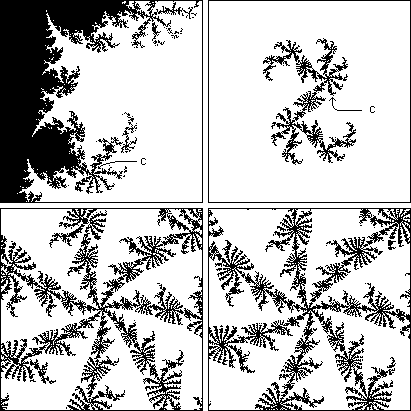

| Misiurewicz points are interesting for another reason. |
| Tan-Lei proved that for every Misiurewicz point c of the Mandelbrot set, a magnified region around c looks like an appropriately magnified region around c in the Julia set Jc. |
| As the magnification increases, the regions of the Mandelbrot set and the Julia set look more and more similar. |
| So detailed pictures of infinitely many Julia sets are encoded in the boundary of the Mandelbrot set. |
| The top left picture shows a part of the Mandelbrot set with a Misiurewicz point c indicated. |
| Top right is the Julia set Jc with the same point c indicated. |
| The bottom picures are magnifications of the Mandelbrot set (left) and the Julia set Jc about the point c. |
|  |
Return to Some features of the Mandelbrot set boundary.